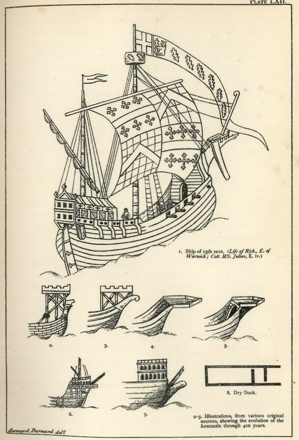
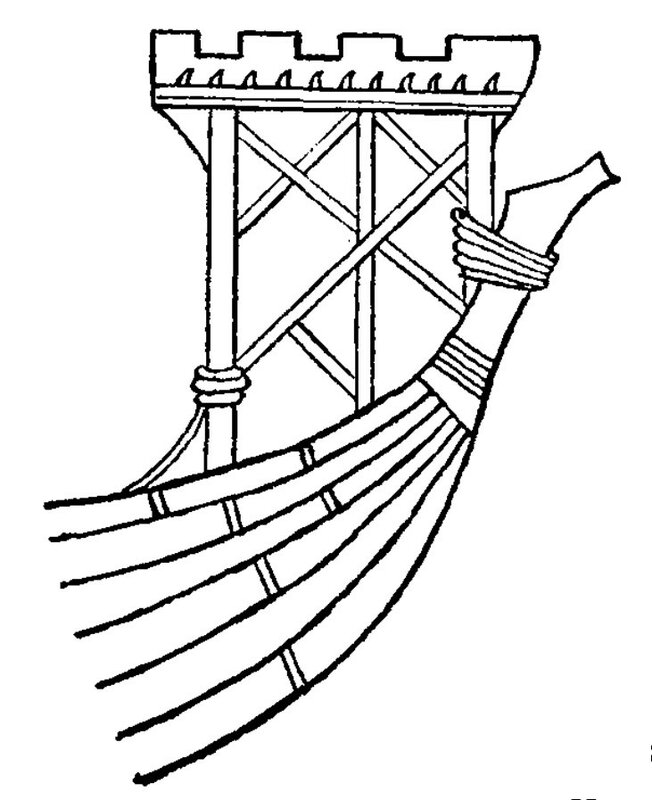
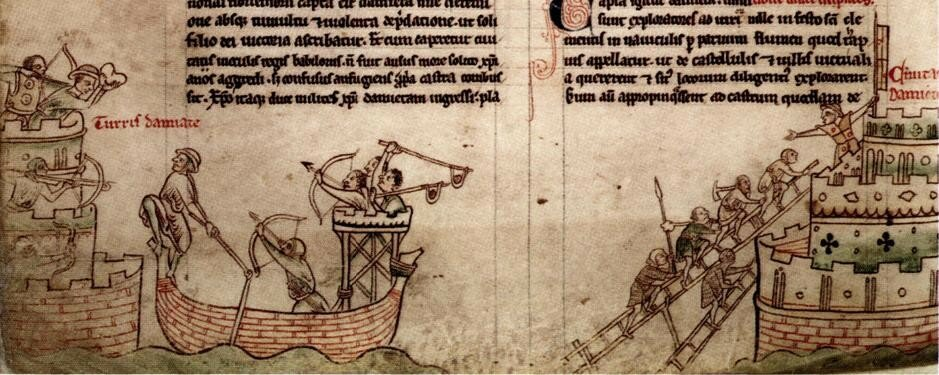
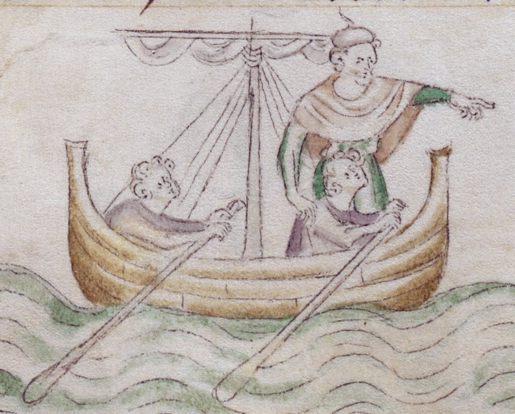

Носовая платформа
Кума, да не та.
Сейчас рассмотрим еще один вариант, который не нашел сторонников среди читателей моего журнала, но имеет определенные основания стать нашей рабочей гипотезой. Посмотрим внимательно на лист с иллюстрациями из книги под ред. Ф.Барнарда " Companion to English History" (Middle Ages), pl. LXII., Оксфорд, 1902.

Здесь под номерами 2-7 показана эволюция боевой платформы в носу корабля от временной конструкции к стационарной носовой надстройке. На начальной стадии этой эволюции, как мы видим, основные элементы носовой боевой платформы просто крепились с помощью тросов к форштевню и бортам судна. Такой упрощенный крепеж вызван тем, что платформу в те времена крепили только перед боем, в остальное время ее снимали. На флоте существовала даже целая группа корабельных плотников, которая занималась сооружением боевых платформ.
Рис.2, который нас особенно интересует,

Прорисовка детали 2 (H. H. Brindley (1912)
взят из манускрипта XIII века из собрания Corpus Christi College, Cambridge.

Осада Дамьетты. Matthew Paris, Chronica Majora II, Saint Albans, England, 1240–53. Folio 59V, MS 16 II, Parker Library, Corpus Christi College, Cambridge.
Вокруг верхней части штевня сделано как минимум четыре шлага. Причем два из них на миниатюре выкрашены в зеленый цвет, а два верхних оставлены белыми. Под этими четырьмя шлагами находится черная полоса, возможно, еще один шлаг. Не исключено, что помимо утилитарного использования данного гаджета он играл и декоративную роль.
Здесь, правда, изображена кормовая надстройка, но в тот период истории корабля разницы между носом и кормой практически не существовало.

Миниатюра из Queen Mary Psalter, Royal MS 2 B VII , 1310–1320, British Museum.
Во второй половине XIV века, когда мы впервые встречаемся с изображениями шлагов троса на форштевне, боевые платформы уже не являлись временными структурами, а превратились в неотъемлемую часть конструкции корабля – кормовую и носовую надстройки. Так может изображения тросовых шлагов на монетах и печатях сохранились лишь как декоративные элементы? На той же миниатюре ниже крепления боевой платформы видны четыре полосы, которые выглядят как четыре тросовых шлага. Но при ближайшем рассмотрении это всего лишь красные полосы на ахтерштевне с белым обрамлением и их изображение кардинально отличается от изображения тросового крепления выше. Такие же декоративные линии мы видим и на форштевне.
Традиция крепить боевую платформу с помощью тросов уходит в значительно более древние времена, чем период появления изучаемого нами гаджета. И существование одновременно элементов крепления платформы с элементами шлагов неясного назначения вокруг штевня на миниатюре осады Дамьетты в Великой хронике Матвея Парижского заставляет нас воздержаться от утверждения, что мы нашли решение нашей загадки.